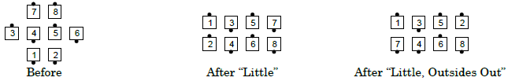
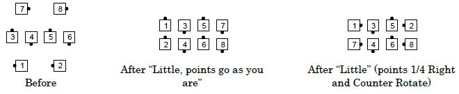

From one-quarter tag or three-quarter tag: Outsides Quarter Right, or as directed, and then Counter Rotate ¼. Centers Step and Fold. Ends in parallel waves or lines. The quartering direction for the outsides may be specified, as in "Left Little" or "Right Little" [outsides go left or right, respectively.]

From Diamonds, there are many ways to direct the points to Counter Rotate without turning first, including: "Little, points go as you are", "Little, Points go forward", and "Centers Start, Little". (See Glossary of Modifying Terms: Start.) The command "Little" (with no direction given) requires the points to 1/4 Right before they Counter Rotate. See the historical note below.
Consider the following two cases:

Historical note: In a previous definition Diamonds were a special exception because, without any words by the caller, the points would automatically go forward. Today the caller must direct the points to go "as you are".